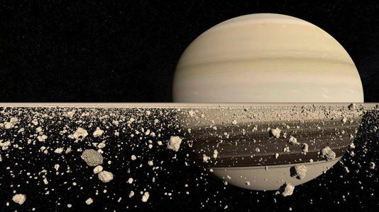
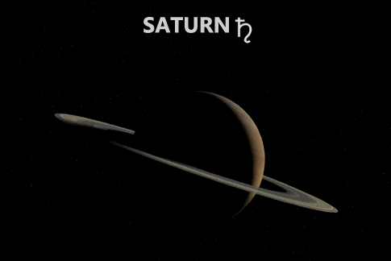
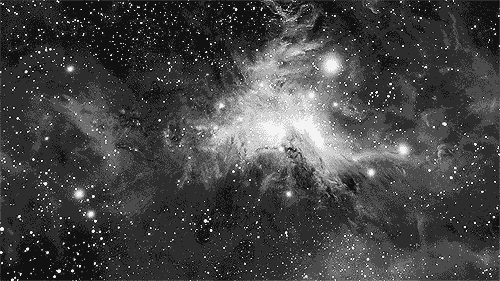
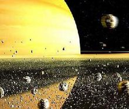
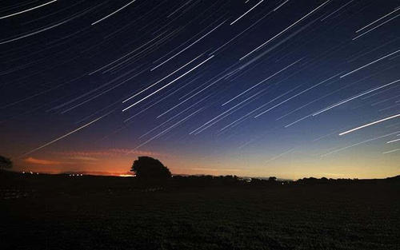
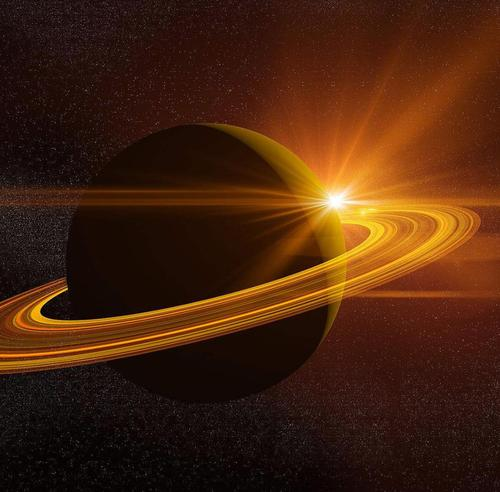
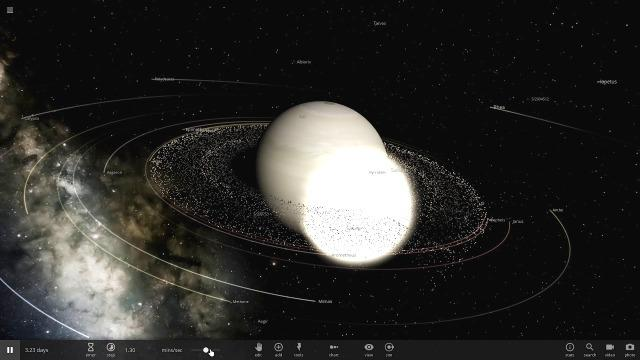
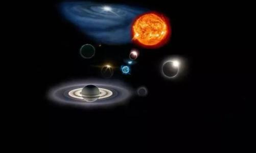

土星相关知识
土星（英文：Saturn，拉丁文：Saturnus，符号：♄），是太阳系八大行星之一，距日距离排太阳系第六位。土星是气态巨行星，欧洲古希腊称之为克为由斯（古希腊语：Κρόνος；英语：Chronos），中国古代人们把土星称为瑞星。
土星主要由氢组成，还有少量的氦与微量元素，内部的核心包括岩石和冰，外围由数层金属氢和气体包裹着。最外层的大气层在外观上可以看出发亮的磁性光环，虽然有时会有长时间存在的现象，土星的风速高达1800公里/时，明显的比木星上的风速快，土星的行星磁场强度介于地球和木星之间，空气流非常之快，土星有别的星球没有的幽亮冰环，主要的成分是冰的微粒和较少数的岩石以及等离子，已经确认的土星的卫星总共有82颗 [1] ，其中，土卫六是土星系统中最大的卫星、太阳系中第二大的卫星（半径2575Km）（太阳系最大的卫星是木星的木卫三，半径2631Km），天文学家通过分析红外线影像发现土星顶部是一个“非比寻常”的六边形漩涡，这种现象在太阳系内是无可比拟的。天文学及科学家认为这个点是土星上温度最高的点，土星上其他各处的温度是-185℃，而该漩涡处的温度则高达-122℃。天文学和科研组至今难以解释这种超今越古的气象。
内部构造
虽然只有少量的直接资料，但土星的内部结构仍被认为与木星相似，即有一个被氢和氦包围着的小核心。岩石核心的构成与地球相似但密度更高。在核心之上，有更厚的液体金属氢层，然后是数层的液态氢和氦层，在最外层是厚达1000公里的大气层，也存在着各种型态冰的踪迹。估计核心区域的质量大约是地球质量的9-22倍。土星有非常热的内部，核心的温度高达11700℃，并且辐射至太空中的能量是它接受来自太阳的能量的2.5倍。大部分能量是由缓慢的重力压缩（克赫历程）产生，但这还不能充分解释土星的热能制造过程。额外的热能可能由另一种机制产生：在土星内部深处，液态氦的液滴如雨般穿过较轻的氢，在此过程中不断地通过空气旋转而产生热能量。
星体运动
公转
土星和其他行星一样，也围绕太阳在椭圆轨道上运动。土星绕太阳公转的轨道半径约为9.54天文距离单位（约14亿公里）轨道的偏心率为0.056，轨道面与黄道面交角为2°5′，绕太阳公转一周约29.5年，公转平均速度约为9.6公里/秒。
土星同太阳的距离在近日点时和在远日点时相差约1.5亿公里。
土星也有四季，只是每一季的时间要长达7年多，因为离太阳遥远，夏季也是极其寒冷的。
自传
土星的自转很快，仅次于木星，其自转角速度随纬度而不同，在赤道上自转周期为10小时14分，在纬度60°处为10小时40分。由于快速自转，使得它的形状变扁，是太阳系行星中形状最扁的一个。
2019年1月，科学家基于美国宇航局卡西尼号探测器在2017年9月被摧毁之前收集到的数据，研究出土星自转的时长：10小时33分38秒。
地貌环境
p id="duanluo">土星表面也有沿赤道伸展的条纹带，表面被云层覆盖。通过天文望远镜，我们可以看到土星表面也有一些明暗交替的带纹平行于它的赤道面，带纹有时也会出现亮斑、暗斑或白斑。白斑的出现不很稳定，最著名的白斑于1933年8月被英国天文爱好者W·T·海用小型天文望远镜发现此白斑位于土星赤道区，蛋形，长度达土星直径的1/5。以后这块白斑逐渐扩大，几乎蔓延到土星的整个赤道带。
土星极地附近呈绿色，是整个表面最暗的区域。根据红外观测得知云顶温度为-170℃，比木星低50℃。土星表面的温度约为-140℃。
由于这颗行星表面温度较低而逃逸速度又大（35.6公里/秒），使土星保留着几十亿年前它形成时所拥有的全部氢和氦。因此，科学家认为，研究土星的成分就等于研究太阳系形成初期的原始成分，这对于了解太阳内部活动及其演化有很大帮助。一般认为土星的化学组成像木星，不过氢的含量较少。土星上甲烷含量比木星多，氨的含量则比木星少。
星体卫星
土星的光环由无数个小块物体组成，它们在土星赤道面上绕土星旋转。土星还是太阳系中卫星数目仅次于木星的一颗行星，周围有许多大大小小的卫星紧紧围绕着它旋转，就像一个小家族。近几年随着观测技术的不断提高大行星卫星的数量急剧攀升，现已发现的土星卫星已是82颗。土星卫星的形态各种各样，五花八门使天文学家们对它们产生了极大的兴趣。最著名的“土卫六”上有大气，是太阳系已知的有大气卫星中的一员。
土星有一个显著的环系统，主要的成分是冰的微粒和较少数的岩石残骸以及尘土已经确认的土星的卫星有62颗，其中9个是1900年以前发现的。其中，土卫六是土星系统中最大和太阳系中第二大的卫星（半径2575km）（太阳系最大的卫星是木星的木卫三半径2634km），比行星中的水星还要大；并且土卫六是唯一拥有明显大气层的卫星土卫一到土卫十按距离土星由近到远排列为：土卫十、土卫一、土卫二、土卫三、土卫四、土卫五、土卫六、土卫七、土卫八、土卫九。土卫十离土星的距离只有159,500公里，仅为土星赤道半径的2.66倍，已接近洛希极限。这些卫星在土星赤道平面附近以近圆轨道绕土星转动。
土星有众多的卫星。精确的数量尚不能确定，所有在环上的大冰块理论上来说都是卫星，而且要区分出是环上的大颗粒还是小卫星是很困难的。到2009年，已经确认的卫星有62颗（2019年已经确认了82颗），其中52颗已经有了正式的名称；还有3颗可能是环上尘埃的聚集体而未能确认。许多卫星都非常的小：34颗的直径小于10公里，另外13颗的直径小于50公里，只有7颗有足够的质量能够以自身的重力达到流体静力平衡。
2019年10月，国际天文学联合会小行星中心宣布，研究人员在土星周围新发现20颗卫星。这20颗新发现的土星卫星每颗直径仅约5公里，其中17颗是逆行卫星，即绕土星运转方向与土星自转方向相反；另3颗为顺行卫星。它们都属于距土星较远的外层卫星，其中一颗逆行卫星是迄今已知距土星最远的卫星。依照轨道倾角的不同，土星的外层卫星被划分为北欧群、高卢群和因纽特群。新发现的卫星中，有两颗顺行卫星被归入因纽特群，研究人员认为这两颗卫星与该群其他成员一样，都是由一颗大卫星在遥远的过去分裂而成。17颗逆行卫星被划入北欧群，它们可能也曾同属于一颗更大的卫星。还有一颗顺行卫星轨道倾角与高卢群卫星相似，但其轨道半径比包括高卢群成员在内的其他顺行卫星都大得多
观测历史
先驱者号
为了探测太阳系外围空间的物理情况，1973年4月“先驱者11号”上天，1979年9月1日飞临土星，成为第一个就近探测土星的人造天体
“先驱者”11号发现土星有一个由电离氢构成的广延电离层，其高层温度约为977℃。观测结果表明，土星极区有极光。
“先驱者11号”飞船于1979年8月、9月在距土星128万公里处发现，土星磁场十分特殊，磁场图很像一条大鲸鱼，其头部圆钝，两边伸出扁形翅，还有粗壮的尾巴。土星磁场的磁轴与其自转轴吻合，磁心偏离土星核心22.5公里。磁场范围比地球的磁场范围大上千倍，但比木星磁场小，也没有木星磁场复杂。
旅行者号
“旅行者”1号、2号在考察完木星后，继续驶向土星，对土星进行考察。完成考察土星的任务后，“旅行者2号”又继续飞向天王星和海王星，对它们进行考察。这些“一身多任”的宇宙飞船，为我们带来了土星的新消息
美国国立光学天文台的科学家们在研究“旅行者”2号发回的土星照片时，发现了一个奇怪的现象：在土星的北极上空有个六角形的云团。这个云团以北极点为中心，并按照土星自转的速度旋转。土星北极的六角形云团并不是“旅行者”2号直接拍到，因为“旅行者”2号并没有直接飞越土星北极上空。但它在土星周围绕行时，从各个角度拍下了土星照片。天文学家们把那些照片合成以后，才看清了土星北极上空的全貌，也才发现了那个六角形云团。土星北极上空六角形云团的出现，促使科学家们不得不重新认识土星，NASA推测其成因与土星的气候有关。
卡西尼号
卡西尼号（Cassini）是卡西尼—惠更斯号的一个组成部分。卡西尼—惠更斯号是美国国家航空航天局、欧洲航天局和意大利航天局的一个合作项目，主要任务是对土星系进行空间探测。卡西尼号探测器以意大利出生的法国天文学家卡西尼的名字命名，其任务是环绕土星飞行，对土星及其大气、光环、卫星和磁场进行深入考察，
“卡西尼号”太空探测器在经过6年8个月、35亿千米的漫长太空旅行之后，已于北京时间2004年7月1日12时12分按计划顺利进入环绕土星转动的轨道，开始对土星大气、光环和卫星进行历时4年的科学考察
2040年，继向火星上发送探测器后，美国航空航天局计划将潜水艇送往土星卫星。宇航局计划使用有翼航天飞船。在以特超音速，成功进入卫星大气层后，释放潜水艇，使其坠落到海洋底部。
两极双极光
土星环绕太阳旋转一周为30年，在公转一次中仅出现两次土星双极光现象。哈勃望远镜拍摄的这张图像显示土星每个极地同时出现闪亮的极光。这一现象是由于“太阳风”形成的，太阳风是太阳喷射的亚原子带电粒子流，与土星大气层的分子发生交互作用。
在地球上，极光是带电粒子沿着地球磁场线进入大气层形成的奇特现象。天文学家发现该图像中土星北极和南极极光之间存在细微的差别，其中包含在北极光中的明亮椭圆形状区域比南极光区域略小，并且光线更强烈一些。这暗示着土星的磁场分布并不均匀，由于北极磁场更强一些，当太阳粒子穿过北极大气层时被加速形成能量较高的粒子流。
英国莱切斯特大学的乔纳森·尼科尔斯（Jonathan Nichols）博士是哈勃研究小组成员之一，他说：“哈勃望远镜已被证实是人类最重要的航天科学工具之一，这也是英国研究小组首次领导的哈勃观测项目，并观测到另一颗行星上的极光现象。”
三星一线
据广东天文学会透露，2016年8月24日将出现罕见的三星一线天文现象。美丽的土星、距离地球最近的外行星火星和天蝎座最亮恒星“心宿二”，三者依次连成一条直线，火星会合心宿二，两者相距只有1.8度，即还不到4个满月排在一起那么远。届时，天上最赤红的两颗天体汇聚在一起，十分引人注目。
这三星一线的稀奇天象，30年才发生一次，上一次出现在1986年2月17日。如果天色晴朗，我国各地乃至全球七大洲都可观赏到。其中南半球比北半球观察条件更理想。各地在日落后40分钟就可投入观察，可连续观测120分钟以上。观测方位在南方稍偏西的晚空。
